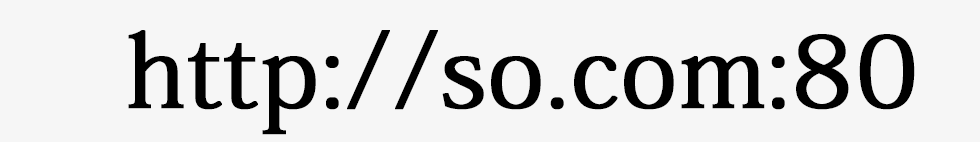
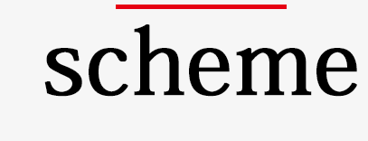
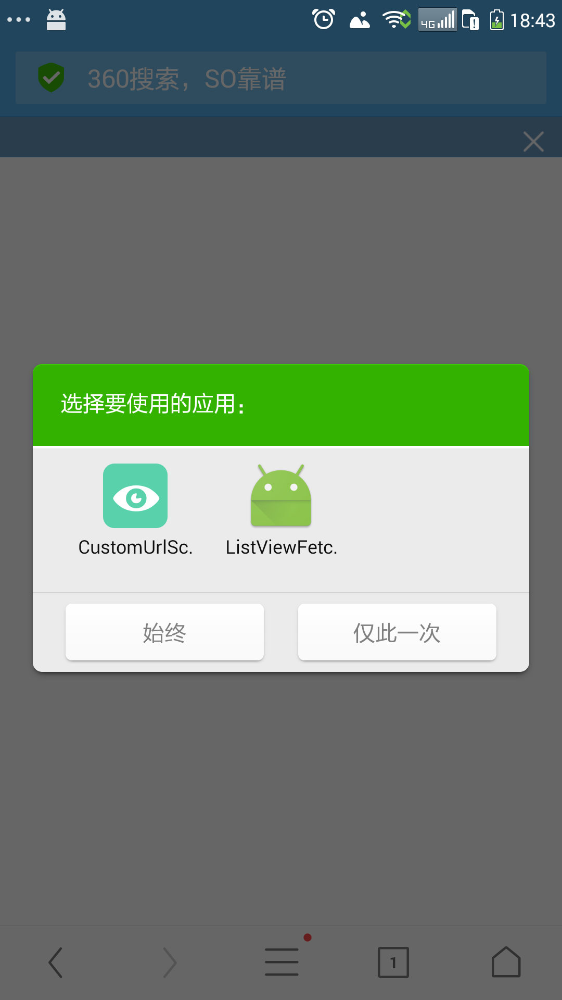
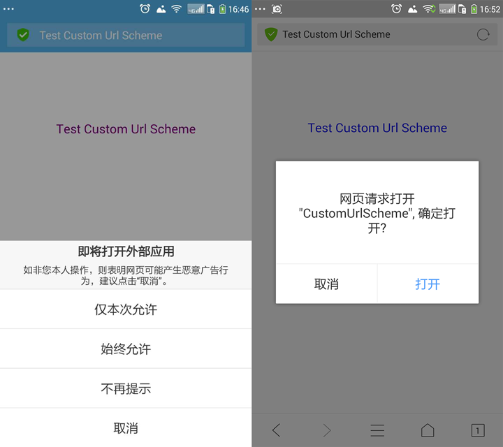
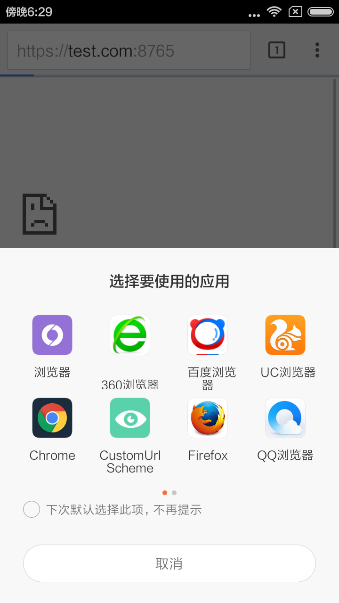

Created by 武许朋
判断是否安装某个APP
进入客户端指定页面
获取信息
跟客户端进行交互（页面在APP内部）
custom scheme url
local webserver


不区分大小写
在RFC1738中定义scheme中只能包含字母、数字、+、- ，现实中浏览器没有严格的遵守。1、a标签
2、location.href="xxx";
3、iframe的方式;
冲突不可检测
部分浏览器会弹出对话框，需要用户确认
无返回值，不确定调用是否成功

支持-不提示：
360、chrome、firefox、小米自带浏览器、酷派自带浏览器
支持-弹框提示：
UC、QQ
不支持
微信、百度

可以通过判断浏览器是否隐藏来判断
document.hidden
document.webkitHidden
document.msHidden
document.mozHidden
document.hidden：
qq、360、chrome、firefox、ie
document.webkitHidden：
UC、qq、360、、chrome
document.mozHidden
firefox
document.msHidden
IE
会停止执行：
qq、百度、小米自带浏览器、酷派自带浏览器
不会停止执行：
360、uc、chrome、微信
setTimeout 执行6次，setInterval执行2次：
firefox
1、是否执行对话框
2、多个程序选择对话框
for(var i=0,l=tag_a.length;l--;i++){
tag_a[i].addEventListener('click', function(e){
var href = this.getAttribute('href'),
applink = this.getAttribute('data-applink'),
timeout = 2000,
delay_time = 10,
click_time = (new Date).getTime();
if(!applink){
return false;
}
app.openWithIframe(applink);
timer1 = setInterval(function(){
if(document.hidden || document.webkitHidden || document.msHidden || document.mozHidden){
clearInterval(timer1);
clearTimeout(timer2);
}
},1);
timer2 = setTimeout(function(){
clearInterval(timer1);
if(document.hidden || document.webkitHidden || document.msHidden || document.mozHidden || now - click_time - delay_time > timeout){
return false;
}
location.href = href;
},timeout);
e.preventDefault();
}, false);
}
Android规定 支持http、https，但国内浏览器都不支持，估计应该是不想将流量倒给其他应用

android.intent.action.MAIN：应用程序入口
android.intent.category.LAUNCHER：Activity显示顶级程序列表中
android.intent.category.DEFAULT：默认的Category
android.intent.action.VIEW：显示指定数据
android.intent.category.BROWSABLE：指定该Activity能被浏览器安全调用
查看对应应用的wap站是否有相关接口调用
1、下载APK安装包
2、解压
3、反编译
java -jar AXMLPrinter2.jar a.xml > b.xml
相关工具：apktool、AXMLPrinter2.jar
Q&A